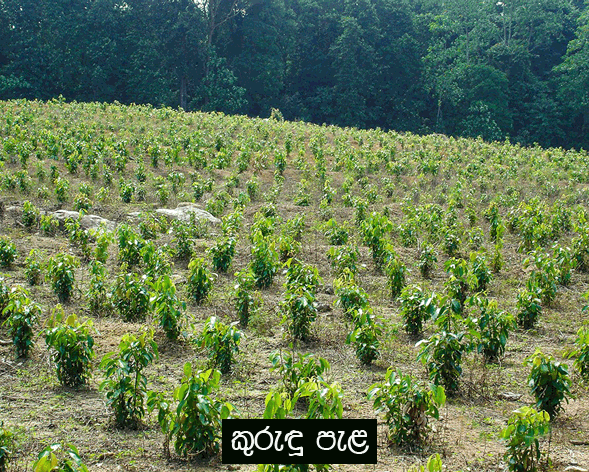
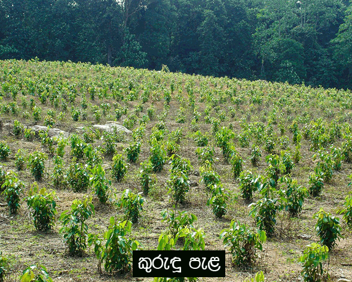
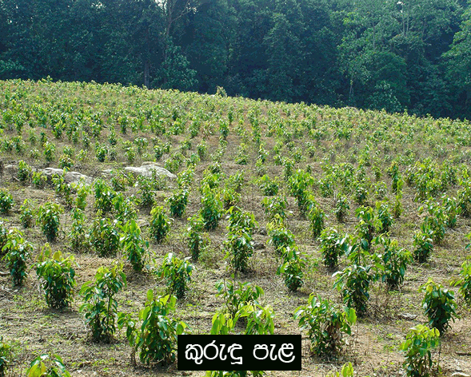

ඔබගේ ඵලදායි නොවන ඉඩමේ කුරුඳු වගා කර නව ආදායම් මාර්ගයක් උදා කර ගැනීමට අවස්ථාවක් ........
මේ සඳහා,
ඔබ සඳහා සහාය අපෙන්....
ශ්රී ලංකාවේ සම්භවය වී ඇති කුරුඳු ශාකය ,පොලොන්නරු යුගයේ පටන් අපනයනයද
සිදු කර ඇති බවට සාක්ෂි හමු වී ඇත .
සත්ය කුරුඳු හා කැසියා කුරුඳු ලෝක වෙළෙඳ පොළේ ප්රචලිත කුරුඳු විශේෂ දෙකකි .
සත්ය කුරුඳු වලට ආදේශකයක් වන කැසියා කුරුඳු වල ගුණාත්මය අඩු වන අතර,
පිළිකා කාරක රසායනයක් වන coumarin ප්රතිශතය ද අධික ය .
එම නිසා ශ්රී ලංකාවේ කුරුඳු වගාවට හොඳ ඉල්ලුමක් මෙන් ම හොඳ අනාගතයක් ද ඇත.
දිනෙන් දින ඉල්ලුම වැඩිවන සත්ය කුරුඳු සැපයුම් ප්රමුඛයා වන්නේ ශ්රී ලංකාවයි .
බෝ නොවන රෝග වලක්වා ගැනීම සඳහා කුරුඳු අඩංගු පාන වර්ග ලොව පුරා
ප්රචලිත වෙමින් ඇත .
දේශීය වෙළඳපොළ තුළ ද කුරුඳු තේ වැනි පාන වර්ග වලට වැඩි ඉල්ලුමක් ඇත .

කුරුඳු වගාවේ වාසි :-